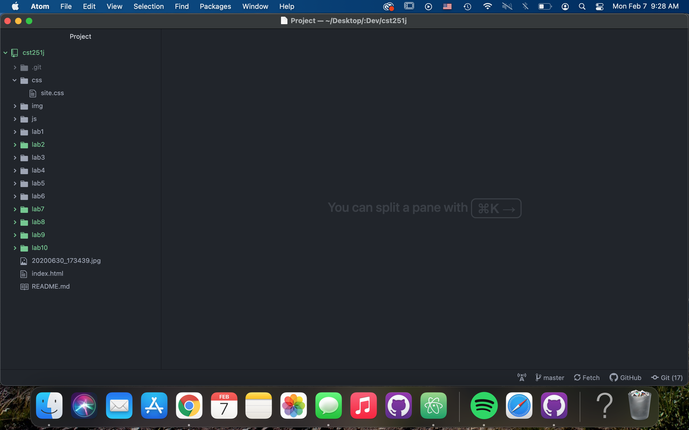
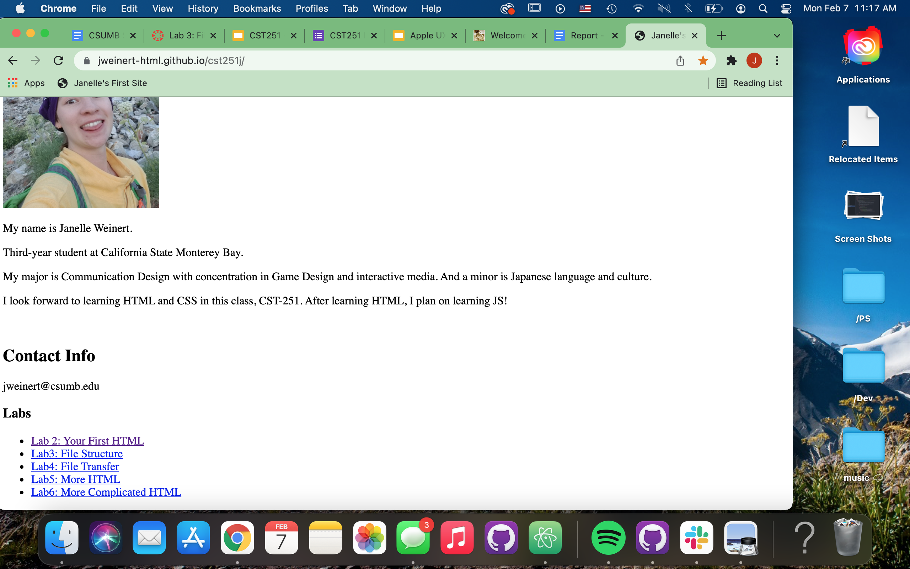
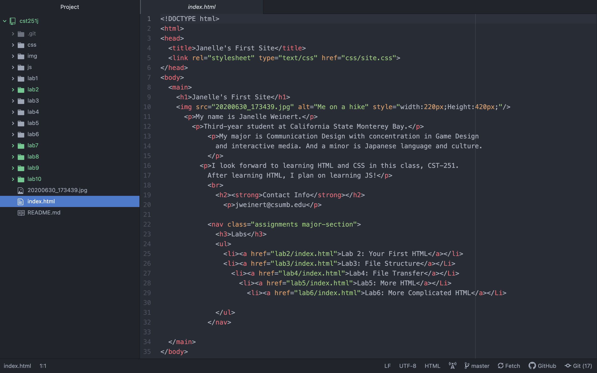

While completing this lab, I found myself returning to the instructions to check if I was inputing my code correctly.Utilizing the provided example screenshots online, I was able to copy the formatting style of the list of labs on my site.
Challenges
Completing the lab was fairly easy, as much of the tasks were done before, in the previous lab as a bonus. Making new lab directories such as lab7,lab8,lab9,and lab10 was a quick process. And creating this html doc has been good, I simply follow the examples provided. However, I am unfamiliar with CSS, so the most challenging aspect is creating a CSS stylesheet that I have yet to complete.
Here are screenshots of my progress as I worked through the lab.
- 
Task 1: Create more identical lab files
- 
Task 2: Create a list of the lab files and link to each one.
- 
Screenshot of my site with the added modifications.